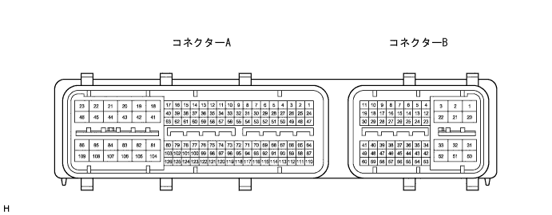
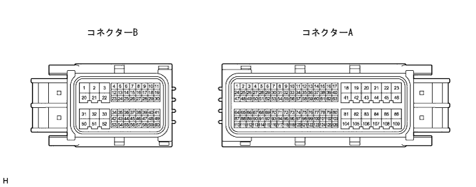
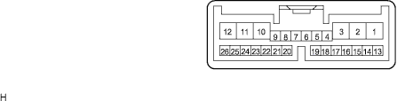
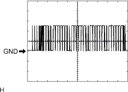
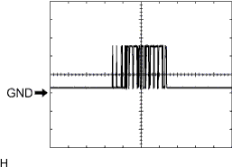

)
)Radar Cruise Control System Terminals of ECU |
)
| Terminal No. | Terminal Symbol | Terminal Name |
|---|---|---|
| A26 | D | Shift position switch D |
| A81 | E1 | Computer ground |
| B8 | SPD | Vehicle Speed |
| B16 | SFTU | Shift switch UP |
| B25 | S | Shift position switch S |
| B27 | TC | Check connector |
| B35 | ST1- | Brake cancel switch |
| B36 | STP | Stop Light Switch |
| B37 | CCHG | Cruise mode change switch |
| B38 | LGND | Radar sensor |
| B40 | CCS | Cruise Control Switch |
| B41 | CANH | CAN communication line HI |
| B49 | CANL | CAN communication line LO |
| B51 | SFTD | Shift switch DOWN |
Disconnect the engine control computer connector.
Using the SST (Toyota electrical tester), measure the voltage or resistance of each terminal of the vehicle side wire harness connector of the engine control computer.

| Inspection Terminal (Terminal Symbol) | Input/Output | Item | Condition | Standard |
|---|---|---|---|---|
| A26(D)←→A81(E1) | Input | Voltage | Shift lever position Other than D position and S position → D position or S position | 1.5 V or less → 7.5 to 14.0 V |
| A104 (E1) ←→ Body ground | - | Resistance | Always | Below 1 Ω |
| B16(SFTU)←→A81(E1) | Input | Resistance | Shift lever S position → Shift to "+" | Below 1 Ω → 10 kΩ or higher |
| B25(S)←→A81(E1) | Input | Voltage | Shift lever S position → Other than S position | 7.5 to 14.0 V → 1.5 V or less |
| B35(ST1-)←→A81(E1) | Input | Voltage | Brake pedal released → Brake pedal depressed | 11.0 to 14.0 V → 1.5 V or less |
| B36(STP)←→A81(E1) | Input | Voltage | Brake pedal released → Brake pedal depressed | 1.5 V or less → 11.0 to 14.0 V |
| B37(CCHG)←→A81(E1) | Input | Resistance | MODE switch OFF → ON | 10 kΩ or higher → Below 1 Ω |
| B38(LGND)←→A81(E1) | - | Resistance | Always | Below 1 Ω |
| B40(CCS)←→A81(E1) | Input | Resistance | Main switch OFF → CANCEL switch ON → -SET switch ON → +RES switch ON → Main switch ON | 10 kΩ or higher → 1386 to 1694 Ω → 567 to 693 Ω → 216 to 264 Ω → Below 1 Ω |
| B51(SFTD)←→A81(E1) | Input | Resistance | Shift lever S position → Shift to "-" | 10 kΩ or higher → Below 1 Ω |

| Inspection Terminal (Terminal Symbol) | Input/Output | Item | Condition | Standard |
|---|---|---|---|---|
| 1(B)←→12(GND) | Input | Voltage | IG ON | 11 to 14 V |
| 2(WIP2)←→12(GND) | Input | Voltage | IG ON, windshield wiper switch assembly OFF → Front wiper Lo → Front wiper HI | 2 V or less → 6 to 9 V → 11 to 14 V |
| 3(WASH)←→12(GND) | Input | Voltage | IG ON, windshield wiper switch assembly OFF → Washer switch ON | 2 V or less → 11 to 14 V |
| 8(CANH)←→12(GND) | Input/Output | Waveform | IG ON | Pulse Generation |
| 9(CANL)←→12(GND) | Input/Output | Waveform | IG ON | Pulse Generation |
| 10 (SGND) ←→ Body ground | - | Resistance | Always | Below 1 Ω |
| 12 (GND) ←→ Body ground | - | Resistance | Always | Below 1 Ω |
| 13(IGB)←→12(GND) | Output | Voltage | IG ON | 11 to 14 V |
| 16(MODE)←→12(GND) | Input | Voltage | IG ON Distance switch OFF → ON | 11 to 14 V → 2 V or less |
| 22(LRDD)←→10(SGND) | Input | Waveform | IG ON | Pulse Generation (Waveform 1) |
| 23(LRRD)←→10(SGND) | Output | Waveform | IG ON | Pulse Generation (Waveform 2) |
 |
Waveform 1
| Item | Description |
|---|---|
| Measurement Terminal | LRDD - SGND |
| Tool Setting | 2V/DIV、10ms/DIV |
| Measurement Condition | IG ON |
 |
Waveform 2
| Item | Description |
|---|---|
| Measurement Terminal | LRRD - SGND |
| Tool Setting | 2V/DIV、10ms/DIV |
| Measurement Condition | IG ON |